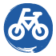

- Lipunmyynti
 Rannekkeet
Rannekkeet- Narikka
Pääportin vierestä löytyy narikka. Tässä vaiheessa on jo hyvä huomioida turvallisuusohjeista, mitä alueelle saa tuoda ja mitä ei. Narikkamaksu on 3 € sisään tullessa ja 2 € aina narikalla käytäessä. Qstock vastaa narikkaan jätetyistä tavaroista VAIN festivaalin aukioloaikoina, joten muistathan hakea tavarasi lähtiessäsi festivaalialueelta. NaRekka: Tavallisen narikan lisäksi voit myös jättää tavarasi rekassa sijaitsevaan itsepalvelunarikkaan, NaRekkaan. Saat oman tavaralokeron käyttöösi 7 € kertamaksulla. Huom! Maksu vain käteisellä!
- Info
Infopiste on auttava käsi ongelmallisen tilanteen kohdatessa. Tämä tiedon mekka sijaitsee festivaalialueella heti turvatarkastuksen jälkeen. Infosta saat tietoa kaikesta festivaaleihin liittyvästä; aikatauluista, paikallisliikenteestä, löytötavaroista jne. Sateen yllättäessä tai korvia kuumottaessa voit myös ostaa pisteestä kertakäyttöisiä sadetakkeja ja korvatulppia.
- Wc
- Ruokaa
- Bändipaidat
- Kierrätyspiste
- Puhelintenlatauspiste
- Vesipiste
- Ensiapu
- Pyörätuolikoroke
Päälavan, Kaleva-lavan ja Rytmirannan miksaustornien vieressä sijaitsevat pyörätuolikorokkeet. Kaleva-lavan pyörätuolikorokkeelle kulku tapahtuu huoltotien kautta Kaleva-lavan oikealta puolelta, Rytmirannan pyörätuolikorokkeelle kulku metsätien läpi kohti Rytmirannan lavaa. Opastekyltit näyttävät oikean reitin.
- Saunalautta
- Rannekkeidenvaihto
- Pyöräparkki
- Leirintäalue
- Lehdistökeskus
- Akkredointi
Akkreditointipisteen kautta vieraat ja median edustajat saavat sisäänpääsyyn oikeuttavan passin tai rannekkeen henkilöllisyystodistusta näyttämällä. Akkreditointipiste sijaitsee Raatin uimahallin ala-aulassa, Raatintie 2.
Akkreditointipisteen aukioloajat:
pe 25.7. klo 11:30–23:00
la 26.7. klo 9:30–21:00 - Otto-automaatti
- Pääportti
- Vip-portti
VIP-asiakkailla on pääporttien lisäksi oma sisäänkäynti Raatin uimahallirakennuksen puoleisella tiellä, josta pääsee suoraan Päälavan läheisyydessä sijaitsevalle VIP-alueelle. Huomioi, että alue on K-18.
- Anniskelualueet
Festivaalialueella on neljä Qstockin anniskelualuetta: Päälavan ja Sirkusteltan välisellä kentällä, Koomalavalla, Kaleva-lavan läheisyydessä sekä Rytmirannalta Oulu-lavalle levittäytyvä anniskelualue. Kaikilta on hyvä näkyvyys anniskelualuetta lähimpänä olevalle lavalle. Juomien osto anniskelualueella toimii panttiperiaatteella. Tämä tarkoittaa sitä, että voit juoman nautittuasi lunastaa siitä pantin takaisin tiskillä tai vaihtaa tölkin uuteen, jolloin pantti vähennetään seuraavasta ostostasi. Tölkkejä voi palauttaa kerrallaan max. 7 kpl. Ikäraja anniskelualueelle on 18 vuotta. Omat alkoholijuomat voit jättää festivaalin ajaksi narikkaan, niiden tuominen festivaalialueelle on kielletty. Anniskelualueilta voit ostaa myös sadetakkeja ja korvatulppia.
- Myyntialue
Festivaalialueelta löytyy myös iloista torimeininkiä. Voit tehdä mahtavia löytöjä kojumyyjien bulevardilla, jotka tarjoavat laajan valikoiman tuotteita koruista ja huiveista levyihin ja bändipaitoihin. Myyntipisteitä ja aktiviteetteja on ympäri festivaalialuetta, voit esimerkiksi käydä hyppäämässä huikean benjihypyn! Ja kun nälkä iskee, on monipuolisuus taattu myös ravintorintamalla. Alueelta löytyy ruokakojuja lähes jokaista pikkunälkää, isoa nälkää ja ruokavaliota ajatellen. Tänä vuonna ruokavalikoimasta löytyy myös ravintola Tuban luomu- ja lähiruokakoju.
UUTTA! Saunalautta: Rytmirannan anniskelualueen rantaveteen lipuu tänä vuonna Oulun Rantasaunaseura Ry:n rakentama Saunalautta, jonka lämpimästi hyväilevistä löylyistä pääsee nauttimaan yli 18-vuotiaat festivaaliasiakkaat.
UUTTA! Metsä: Bongaa outolintu, saat piirroksen poskeen tai ota chillisti Metsän siimeksessä. Qstockin Metsässä on monta ihmeellistä asiaa, se hämmästyttää kummastuttaa pientä festarikulkijaa.
- Festivaalialue
 Eteisalue
EteisalueFestivaalialue alkaa niin sanotulla eteisalueella, jossa voit vaihtaa lippusi rannekkeeseen ja viedä ylimääräiset tavarat narikkaan. Portit aukeavat perjantaina 25.7. klo 14:00 ja lauantaina 26.7. klo 11:00. Eteisalueelta pääset varsinaiselle festivaalialueelle turvatarkastuksen kautta. Sisääntuloväyliä on useita, mutta jonoja saattaa kuitenkin esiintyä. Voit itse ehkäistä jonojen syntymistä mm. vaihtamalla lippusi rannekkeeseen ennakkoon, saapumalla alueelle hyvissä ajoin ja jättämällä kielletyt tavarat kotiin tai narikkaan. Jos näistä varotoimenpiteistä huolimatta kuitenkin juutut hetkeksi jonoon, muista säilyttää hyvä festarimieli.
- Vip-alue